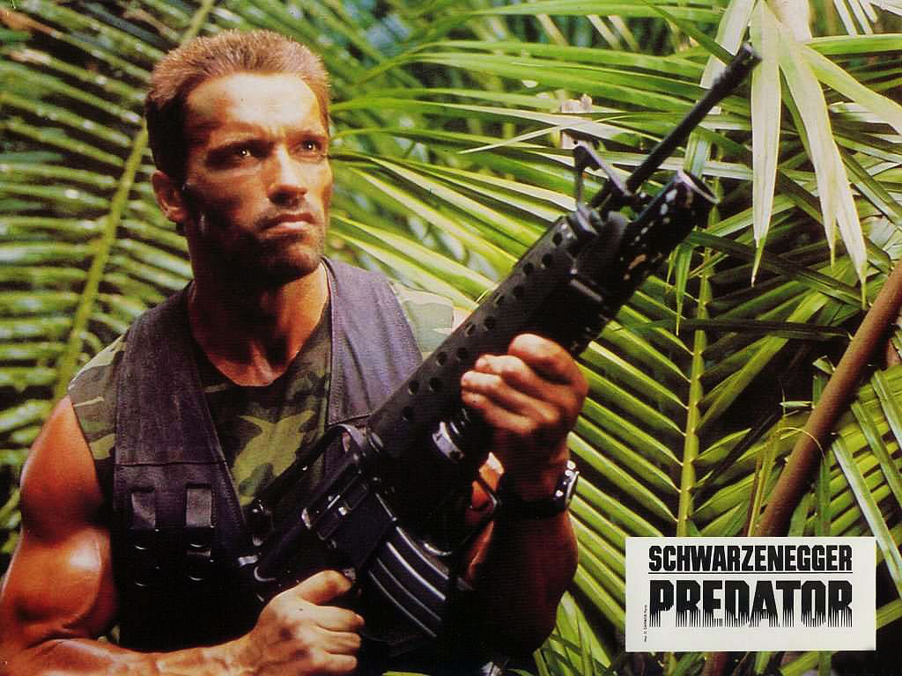

Logros
Carrera de culturista
El objetivo de Schwarzenegger era convertirse en el mayor culturista del mundo, es decir, ganar el Mr. Olympia.513 En su primer intento en 1969, perdió contra el tres veces campeón Sergio Oliva. Sin embargo, Schwarzenegger volvió en 1970 y ganó la competición convirtiéndose en el más joven en hacerlo, un récord que aún ostenta. Continuó su racha entre 1971 y 1974. Meses antes del concurso de 1975, los directores de cine George Butler y Robert Fiore persuadieron a Schwarzenegger para que compitiera para grabar su entrenamiento en el documental llamado Pumping Iron. Schwarzenegger solo tuvo tres meses para prepararse para la competición, tras haber perdido bastante peso para aparecer en la película Stay Hungry con Jeff Bridges. Lou Ferrigno no fue suficiente amenaza y un Schwarzenegger menos pesado que de costumbre ganó el campeonato de 1975 de Mr. Olympia por sexto año consecutivo, superando a Franco Columbu. Tras el concurso de 1975, Schwarzenegger anunció su retirada del culturismo profesional.

Carrera de actor
Schwarzenegger quería convertirse en actor y finalmente lo consiguió cuando fue elegido para el papel de Hércules en la película de 1969 Hércules en Nueva York, acreditado como "Arnold Strong," su acento era tan fuerte que sus diálogos fueron doblados en postproducción. Su segunda aparición fue en el papel de un matón sordomudo no acreditado en la película de Robert Altman The Long Goodbye en 1973, tras esta interpretó un papel sustancialmente más importante en la película Stay Hungry en 1976 por el que ganó el Globo de Oro a la nueva estrella del año. Schwarzenegger declaró sobre sus comienzos en el mundo del cine: "El comienzo fue muy difícil para mi. Me dijeron los agentes y en los casting que mi cuerpo era muy extraño, que tenía un acento gracioso y que mi nombre era muy largo. Me dijeron que tenía que cambiarlo. Básicamente, en cualquier sitio que me presentaba, me decían que no tenía ninguna oportunidad." Schwarzenegger llamó la atención de la industria con la película ambientada en el mundo del culturismo Pumping Iron (1977),1112 parte de la película era ficción. En 1991, Schwarzenegger compró los derechos de la película, de las tomas y de las fotos. Schwarzenegger hizo una prueba para el papel de Hulk en la serie de televisión The Incredible Hulk, pero no consiguió el papel debido a su altura, el papel lo conseguiría Lou Ferrigno. Schwarzenegger apareció con Kirk Douglas y Ann-Margret en la comedia de 1979 Cactus Jack, un sonado fracaso de taquilla y donde Schwarzenegger añade en sus memorias que su participación en esa película sólo le sirvió para obtener una mayor afinidad a la hora de montar a caballo. En ese mismo año, 1979, también interpretó al culturista profesional Mickey Hargitay, el marido de Jayne Mansfield, en la película biográfica La historia de Jayne Mansfield, basada en la vida de la actriz de los años 50
